Tests
43 test(s) passed
14 test(s) failed, 0 others
Steps
260 step(s) passed
14 step(s) failed, 0 others
Tests
-
HomepageHeaderplay Jun 15, 2022 01:50:36 PM passJun 15, 2022 01:50:36 PM Jun 15, 2022 01:58:58 PM 0h 8m 22s+0ms
-
C29 - Can you see an appropriate icon for Donate?
Jun 15, 2022 09:19:17 PM 0h 6m 57s+432ms passStatus Timestamp Details check_circle 1:50:48 PM Donatebutton is displayed 
-
C34 - If you are signed in, do you see a My iCivics button instead of Sign In?
Jun 15, 2022 09:19:17 PM 0h 6m 57s+436ms passStatus Timestamp Details check_circle 1:51:19 PM The Element LOG IN clicked 
check_circle 1:51:22 PM Myicivicsbutton is display after login instead of signin button 
-
C35 - Can you see your avatar icon represented in the button?
Jun 15, 2022 09:19:17 PM 0h 6m 57s+437ms passStatus Timestamp Details check_circle 1:52:17 PM The Element LOG IN clicked check_circle 1:52:21 PM Myicivicsbutton is display after login instead of signin button 
-
C36 - When you select Sign In/My iCivics, does a submenu open below the button?
Jun 15, 2022 09:19:17 PM 0h 6m 57s+439ms passStatus Timestamp Details check_circle 1:53:16 PM The Element LOG IN clicked check_circle 1:53:20 PM myicivics button is clicked and submenu is display 
-
C37 - When you select Sign In, do you see links to Sign In, Register As a Student, Register As A Teacher in the submenu?
Jun 15, 2022 09:19:17 PM 0h 6m 57s+441ms passStatus Timestamp Details check_circle 1:54:12 PM The Element LOG IN clicked check_circle 1:54:16 PM myicivics button is clicked and submenu is display 
check_circle 1:54:16 PM myicivics submenu count is 3 
check_circle 1:54:16 PM myicivcs submenu is MY ICIVICS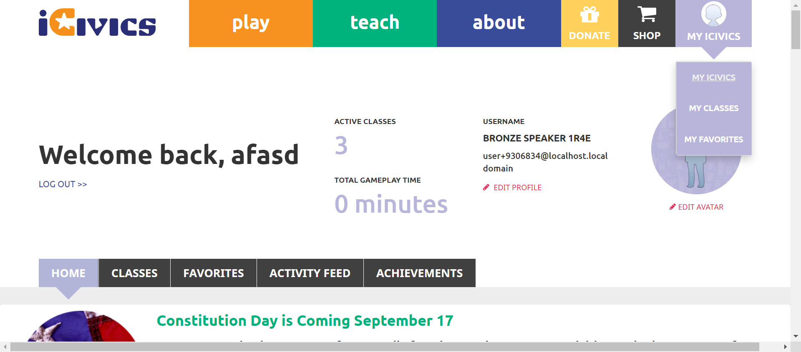 check_circle 1:54:16 PM myicivcs submenu is MY CLASSES 
check_circle 1:54:16 PM myicivcs submenu is MY FAVORITES 
-
C39 -When you select a link in the submenu, are you navigated to the appropriate page?
Jun 15, 2022 09:19:17 PM 0h 6m 57s+443ms passStatus Timestamp Details check_circle 1:54:48 PM The Element LOG IN clicked 
check_circle 1:55:16 PM The mouse over by xpath : (//a[@title='MY ICIVICS'])[2] is performed. 
check_circle 1:55:17 PM The element [[ChromeDriver: chrome on WINDOWS (c9520fa87a9ebc0d6af92a3752477185)] -> xpath: (//a[@title='My iCivics'])[2]] is visible 
check_circle 1:55:17 PM The expected text contains the actual MY ICIVICS 
check_circle 1:55:42 PM The Element MY ICIVICS clicked 
check_circle 1:55:42 PM The expected https://staging.d9.icivics.org/user/9306834 url as same as the https://staging.d9.icivics.org/user/9306834 actual url. 
check_circle 1:55:42 PM The expected text contains the actual Welcome back,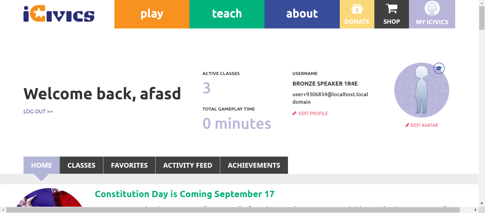 check_circle 1:55:42 PM The mouse over by xpath : (//a[@title='MY ICIVICS'])[2] is performed. 
check_circle 1:55:43 PM The element [[ChromeDriver: chrome on WINDOWS (c9520fa87a9ebc0d6af92a3752477185)] -> xpath: (//a[@title='My Classes'])[2]] is visible 
check_circle 1:55:43 PM The expected text contains the actual MY CLASSES 
check_circle 1:56:09 PM The Element MY CLASSES clicked 
check_circle 1:56:09 PM The expected https://staging.d9.icivics.org/classes url as same as the https://staging.d9.icivics.org/classes actual url.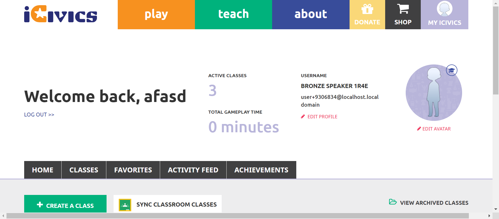 check_circle 1:56:09 PM The expected text contains the actual SYNC CLASSROOM CLASSES 
check_circle 1:56:09 PM The mouse over by xpath : (//a[@title='MY ICIVICS'])[2] is performed. 
check_circle 1:56:10 PM The element [[ChromeDriver: chrome on WINDOWS (c9520fa87a9ebc0d6af92a3752477185)] -> xpath: (//a[@title='My Favorites'])[2]] is visible 
check_circle 1:56:10 PM The expected text contains the actual MY FAVORITES 
check_circle 1:56:34 PM The Element MY FAVORITES clicked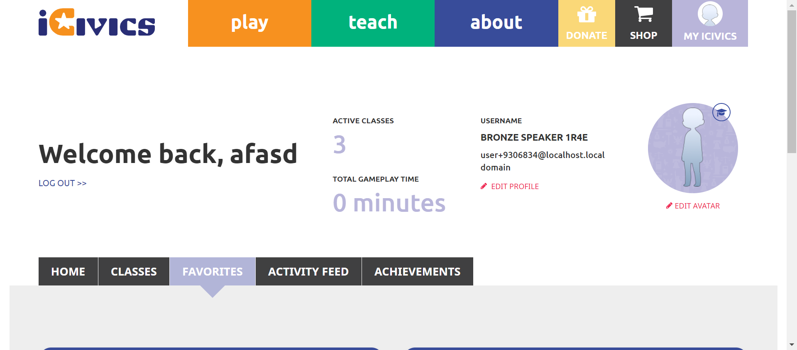 check_circle 1:56:34 PM The expected https://staging.d9.icivics.org/favorites url as same as the https://staging.d9.icivics.org/favorites actual url. 
check_circle 1:56:34 PM The expected text contains the actual Lessons from Antiquity 
-
C30 - When you select Donate, are you directed to https://give.icivics.org/?
Jun 15, 2022 09:19:17 PM 0h 6m 57s+450ms passStatus Timestamp Details check_circle 1:57:11 PM Donatebutton is clicked check_circle 1:57:53 PM 'Donatebutton is clicked'redirect to corresponding pagehttps://give.icivics.org/q7Mcn0NUdUylSaBbpfwl4w2?_ga=2.199228266.493429236.1655281606-290966588.1655281606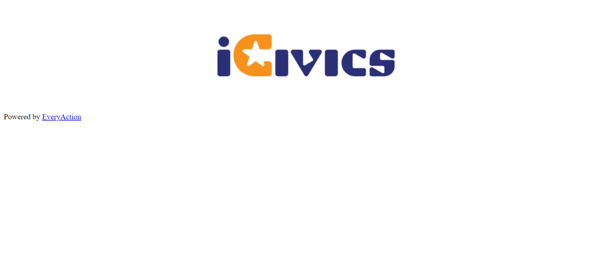 -
C31 - Can you see an appropriate icon for Shop?
Jun 15, 2022 09:19:17 PM 0h 6m 57s+452ms passStatus Timestamp Details check_circle 1:57:58 PM Shopbutton is displayed 
-
C32 - When you select Shop, are you directed to https://icivics.myshopify.com/?
Jun 15, 2022 09:19:17 PM 0h 6m 57s+453ms passStatus Timestamp Details check_circle 1:58:22 PM Shopbutton is clicked 
check_circle 1:58:26 PM 'Shopbutton is clicked'redirect to corresponding pagehttps://icivics.myshopify.com/ -
C42 - When you select Sign In / My iCivics again while the submenu is open, does the submenu close?
Jun 15, 2022 09:19:17 PM 0h 6m 57s+454ms passStatus Timestamp Details check_circle 1:58:55 PM The Element LOG IN clicked 
check_circle 1:58:58 PM myicivics button is clicked and submenu is Display 
check_circle 1:58:58 PM Clicking button again my icivics submenu close 
-
-
HomepageHeaderplay Jun 15, 2022 02:15:16 PM passJun 15, 2022 02:15:16 PM Jun 15, 2022 02:15:49 PM 0h 0m 33s+0ms
-
C23 - Do you see links to About iCivics, Who We Are, Our Strategy, CIVXNOW, Our Team, Blog, and Contact Us in the submenu?
Jun 15, 2022 09:19:17 PM 0h 6m 57s+460ms passStatus Timestamp Details check_circle 2:15:47 PM The Element about clicked 
check_circle 2:15:47 PM Aboutsubmenu display successfully 
check_circle 2:15:48 PM Aboutbutton submenu count is 7 
check_circle 2:15:48 PM Aboutbutton submenu is ABOUT ICIVICS 
check_circle 2:15:48 PM Aboutbutton submenu is WHO WE ARE 
check_circle 2:15:48 PM Aboutbutton submenu is OUR STRATEGY 
check_circle 2:15:48 PM Aboutbutton submenu is CIVXNOW 
check_circle 2:15:49 PM Aboutbutton submenu is OUR TEAM 
check_circle 2:15:49 PM Aboutbutton submenu is BLOG 
check_circle 2:15:49 PM Aboutbutton submenu is CONTACT US 
-
-
HomepageHeaderplay Jun 15, 2022 02:20:25 PM passJun 15, 2022 02:20:25 PM Jun 15, 2022 02:23:15 PM 0h 2m 50s+0ms
-
C24 - When you select a link in the submenu, are you navigated to the appropriate page?
Jun 15, 2022 09:19:17 PM 0h 6m 57s+469ms passStatus Timestamp Details check_circle 2:20:59 PM The mouse over by xpath : (//a[@href='/about'])[3] is performed. 
check_circle 2:20:59 PM The element [[ChromeDriver: chrome on WINDOWS (8121596d412146c07473d88f30af6f27)] -> xpath: (//li[@class='first about icivics']/a)[2]] is visible 
check_circle 2:20:59 PM The expected text contains the actual ABOUT ICIVICS 
check_circle 2:21:20 PM The Element ABOUT ICIVICS clicked 
check_circle 2:21:20 PM The expected https://staging.d9.icivics.org/about url as same as the https://staging.d9.icivics.org/about actual url. 
check_circle 2:21:20 PM The expected text contains the actual iCivics reimagines civic education for American democracy 
check_circle 2:21:21 PM The mouse over by xpath : (//a[@href='/about'])[3] is performed. 
check_circle 2:21:21 PM The element [[ChromeDriver: chrome on WINDOWS (8121596d412146c07473d88f30af6f27)] -> xpath: (//li[contains(@class,'who we')]//a)[2]] is visible 
check_circle 2:21:21 PM The expected text contains the actual WHO WE ARE 
check_circle 2:21:47 PM The Element WHO WE ARE clicked 
check_circle 2:21:47 PM The expected https://staging.icivics.org/who-we-are url as same as the https://staging.icivics.org/who-we-are actual url. 
check_circle 2:21:50 PM The mouse over by xpath : (//a[@href='/about'])[3] is performed. 
check_circle 2:21:50 PM The element [[ChromeDriver: chrome on WINDOWS (8121596d412146c07473d88f30af6f27)] -> xpath: (//li[@class='our strategy']//a)[2]] is visible 
check_circle 2:21:51 PM The expected text contains the actual OUR STRATEGY 
check_circle 2:22:11 PM The Element OUR STRATEGY clicked 
check_circle 2:22:12 PM The expected https://staging.icivics.org/our-strategy url as same as the https://staging.icivics.org/our-strategy actual url. 
check_circle 2:22:15 PM The mouse over by xpath : (//a[@href='/about'])[3] is performed. 
check_circle 2:22:15 PM The element [[ChromeDriver: chrome on WINDOWS (8121596d412146c07473d88f30af6f27)] -> xpath: (//li[@class='civxnow']//a)[2]] is visible 
check_circle 2:22:16 PM The expected text contains the actual CIVXNOW check_circle 2:22:16 PM The Element CIVXNOW clicked 
check_circle 2:22:33 PM The expected https://civxnow.org/ url as same as the https://civxnow.org/ actual url. 
check_circle 2:22:36 PM The mouse over by xpath : (//a[@href='/about'])[3] is performed. 
check_circle 2:22:36 PM The element [[ChromeDriver: chrome on WINDOWS (8121596d412146c07473d88f30af6f27)] -> xpath: (//a[@href='/our-team'])[2]] is visible 
check_circle 2:22:36 PM The expected text contains the actual OUR TEAM 
check_circle 2:22:57 PM The Element OUR TEAM clicked 
check_circle 2:22:57 PM The expected https://staging.icivics.org/our-team url as same as the https://staging.icivics.org/our-team actual url. 
check_circle 2:23:01 PM The mouse over by xpath : (//a[@href='/about'])[3] is performed. 
check_circle 2:23:01 PM The element [[ChromeDriver: chrome on WINDOWS (8121596d412146c07473d88f30af6f27)] -> xpath: (//li[@class='blog']//a)[2]] is visible 
check_circle 2:23:01 PM The expected text contains the actual BLOG 
check_circle 2:23:05 PM The Element BLOG clicked 
check_circle 2:23:05 PM The expected https://staging.d9.icivics.org/news?keys=&tid%5B1%5D=1 url as same as the https://staging.d9.icivics.org/news?keys=&tid%5B1%5D=1 actual url. 
check_circle 2:23:05 PM The expected text contains the actual iCivics Blog and News 
check_circle 2:23:08 PM The mouse over by xpath : (//a[@href='/about'])[3] is performed. 
check_circle 2:23:08 PM The element [[ChromeDriver: chrome on WINDOWS (8121596d412146c07473d88f30af6f27)] -> xpath: (//a[@href='/contact'])[2]] is visible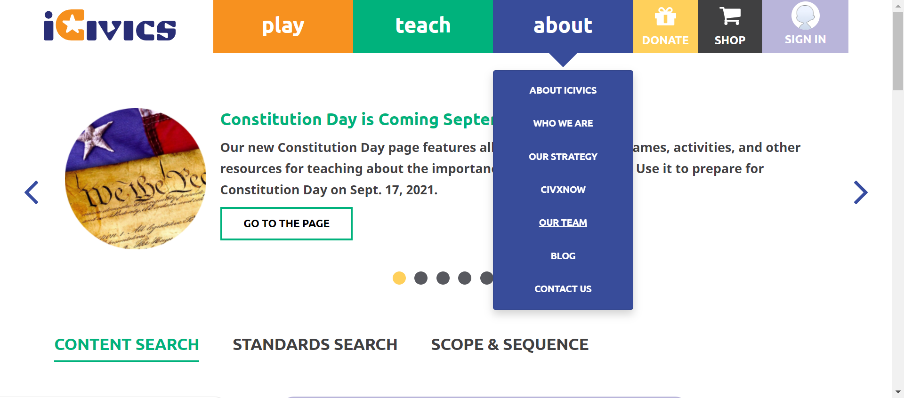 check_circle 2:23:08 PM The expected text contains the actual CONTACT US 
check_circle 2:23:13 PM The Element CONTACT US clicked 
check_circle 2:23:13 PM The expected https://icivics.zendesk.com/hc/en-us/requests/new url as same as the https://icivics.zendesk.com/hc/en-us/requests/new actual url. 
check_circle 2:23:15 PM All links in the About dropdown is verified sucessfully 
-
-
HomepageHeaderplay Jun 15, 2022 02:23:49 PM passJun 15, 2022 02:23:49 PM Jun 15, 2022 02:24:22 PM 0h 0m 33s+0ms
-
C27 - When you select About again while the submenu is open, does the submenu close?
Jun 15, 2022 09:19:17 PM 0h 6m 57s+485ms passStatus Timestamp Details check_circle 2:24:21 PM The Element about clicked 
check_circle 2:24:22 PM Aboutsubmenu display successfully 
check_circle 2:24:22 PM The Element about clicked 
check_circle 2:24:22 PM About button is successfully clicked again and about menu is close 
-
-
HomepageHeaderplay Jun 15, 2022 02:28:43 PM passJun 15, 2022 02:28:43 PM Jun 15, 2022 02:28:55 PM 0h 0m 12s+0ms
-
C13- When you select Play again while the submenu is open, does the submenu close?
Jun 15, 2022 09:19:17 PM 0h 6m 57s+490ms passStatus Timestamp Details check_circle 2:28:55 PM playbutton submenu is display 
check_circle 2:28:55 PM The Element play clicked 
check_circle 2:28:55 PM On clicking Playbutton again submenu is close 
-
-
HomepageHeader Jun 15, 2022 02:34:13 PM passJun 15, 2022 02:34:13 PM Jun 15, 2022 02:34:24 PM 0h 0m 11s+0ms
-
C20 - When you select Teach again while the submenu is open, does the submenu close?
Jun 15, 2022 09:19:17 PM 0h 6m 57s+494ms passStatus Timestamp Details check_circle 2:34:23 PM The Element teach clicked 
check_circle 2:34:23 PM Teachsubmenu display successfully 
check_circle 2:34:24 PM The Element teach clicked 
check_circle 2:34:24 PM on clicking again teach submenu is close 
-
-
HomepageHeaderplay Jun 15, 2022 03:59:11 PM failJun 15, 2022 03:59:11 PM Jun 15, 2022 03:59:50 PM 0h 0m 39s+0ms
-
C8 - When you select Play, does a submenu open below the Play button?
Jun 15, 2022 09:19:17 PM 0h 6m 57s+499ms passStatus Timestamp Details check_circle 3:59:29 PM playbutton submenu is display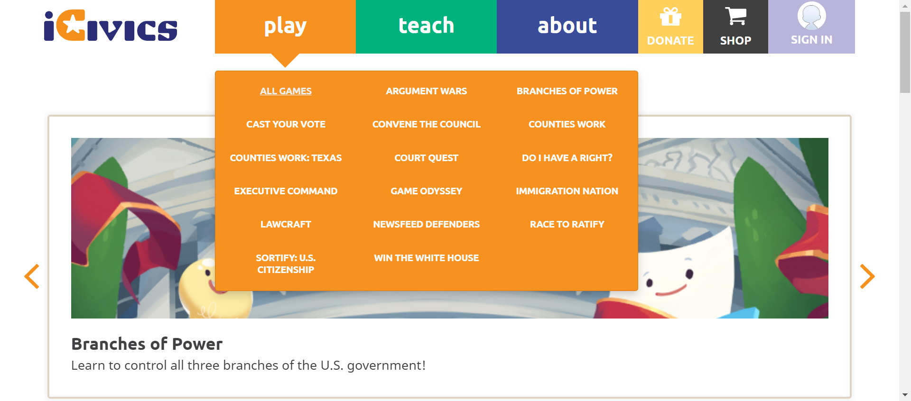 -
C10- When you select a link in the submenu, are you navigated to the appropriate page?
Jun 15, 2022 09:19:17 PM 0h 6m 57s+500ms pass -
C9- Do you see links to All Games, as well as each individual game in the submenu?
Jun 15, 2022 09:19:17 PM 0h 6m 57s+501ms pass -
C12- If you are viewing one of the pages in the Play submenu, is that page underlined in the submenu?
Jun 15, 2022 09:19:17 PM 0h 6m 57s+501ms pass -
C13- When you select Play again while the submenu is open, does the submenu close?
Jun 15, 2022 09:19:17 PM 0h 6m 57s+502ms failStatus Timestamp Details cancel 3:59:50 PM The Element with locator:XPATH&(//a[@title='Play Games'])[3] Not Found with value: (//a[@title='Play Games'])[3] 
-
-
HomepageHeaderplay Jun 15, 2022 04:00:02 PM passJun 15, 2022 04:00:02 PM Jun 15, 2022 04:00:16 PM 0h 0m 14s+0ms
-
C12- If you are viewing one of the pages in the Play submenu, is that page underlined in the submenu?
Jun 15, 2022 09:19:17 PM 0h 6m 57s+505ms passStatus Timestamp Details check_circle 4:00:16 PM The Element play clicked
-
-
HomepageHeaderplay Jun 15, 2022 04:01:15 PM passJun 15, 2022 04:01:15 PM Jun 15, 2022 04:01:29 PM 0h 0m 14s+0ms
-
C12- If you are viewing one of the pages in the Play submenu, is that page underlined in the submenu?
Jun 15, 2022 09:19:17 PM 0h 6m 57s+508ms passStatus Timestamp Details check_circle 4:01:29 PM The Element play clicked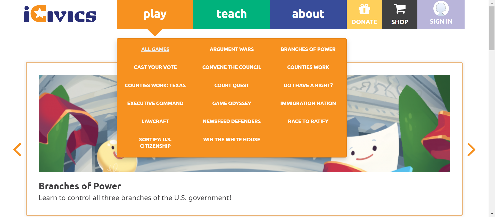
-
-
HomepageHeaderplay Jun 15, 2022 04:03:08 PM failJun 15, 2022 04:03:08 PM Jun 15, 2022 04:04:20 PM 0h 1m 12s+0ms
-
C12- If you are viewing one of the pages in the Play submenu, is that page underlined in the submenu?
Jun 15, 2022 09:19:17 PM 0h 6m 57s+510ms failStatus Timestamp Details check_circle 4:04:00 PM The Element play clicked 
check_circle 4:04:20 PM The Element play clicked 
cancel 4:04:20 PM Selected page is not underlined 
-
-
HomepageHeaderplay Jun 15, 2022 04:07:16 PM failJun 15, 2022 04:07:16 PM Jun 15, 2022 04:08:00 PM 0h 0m 44s+0ms
-
C12- If you are viewing one of the pages in the Play submenu, is that page underlined in the submenu?
Jun 15, 2022 09:19:17 PM 0h 6m 57s+514ms failStatus Timestamp Details check_circle 4:07:29 PM The Element play clicked 
check_circle 4:07:56 PM The Element play clicked 
cancel 4:08:00 PM Selected page is not underlined 
-
-
HomepageHeaderplay Jun 15, 2022 04:09:07 PM passJun 15, 2022 04:09:07 PM Jun 15, 2022 04:09:51 PM 0h 0m 44s+0ms
-
C12- If you are viewing one of the pages in the Play submenu, is that page underlined in the submenu?
Jun 15, 2022 09:19:17 PM 0h 6m 57s+517ms passStatus Timestamp Details check_circle 4:09:20 PM The Element play clicked 
check_circle 4:09:48 PM The Element play clicked 
check_circle 4:09:51 PM Selected page is underlined 
-
-
HomepageHeaderplay Jun 15, 2022 06:29:34 PM failJun 15, 2022 06:29:34 PM Jun 15, 2022 06:29:57 PM 0h 0m 23s+0ms
-
C41 -If you are viewing one of the pages in the Sign In/My iCivics submenu, is that page underlined in the submenu?
Jun 15, 2022 09:19:17 PM 0h 6m 57s+520ms failStatus Timestamp Details cancel 6:29:57 PM The Element with locator:XPATH&(//a[@title='MY ICIVICS']//span)[3] Not Found with value: (//a[@title='MY ICIVICS']//span)[3] 
-
-
HomepageHeaderplay Jun 15, 2022 06:30:28 PM passJun 15, 2022 06:30:28 PM Jun 15, 2022 06:31:30 PM 0h 1m 2s+0ms
-
C41 -If you are viewing one of the pages in the Sign In/My iCivics submenu, is that page underlined in the submenu?
Jun 15, 2022 09:19:17 PM 0h 6m 57s+522ms passStatus Timestamp Details check_circle 6:31:02 PM The Element LOG IN clicked 
check_circle 6:31:05 PM myicivics button is clicked and submenu is display 
check_circle 6:31:05 PM myicivics button is clicked and submenu is Display 
check_circle 6:31:05 PM Clicking button again my icivics submenu close 
check_circle 6:31:30 PM Selected page is underlined 
-
-
HomepageHeaderplay Jun 15, 2022 06:32:38 PM passJun 15, 2022 06:32:38 PM Jun 15, 2022 06:33:43 PM 0h 1m 5s+0ms
-
C41 -If you are viewing one of the pages in the Sign In/My iCivics submenu, is that page underlined in the submenu?
Jun 15, 2022 09:19:17 PM 0h 6m 57s+526ms passStatus Timestamp Details check_circle 6:33:10 PM The Element LOG IN clicked 
check_circle 6:33:14 PM myicivics button is clicked and submenu is display 
check_circle 6:33:42 PM Selected page is underlined 
check_circle 6:33:43 PM myicivics button is clicked and submenu is Display 
check_circle 6:33:43 PM Clicking button again my icivics submenu close 
-
-
HomepageHeaderplay Jun 15, 2022 06:45:07 PM passJun 15, 2022 06:45:07 PM Jun 15, 2022 06:46:10 PM 0h 1m 3s+0ms
-
C41 -If you are viewing one of the pages in the Sign In/My iCivics submenu, is that page underlined in the submenu?
Jun 15, 2022 09:19:17 PM 0h 6m 57s+529ms passStatus Timestamp Details check_circle 6:45:38 PM The Element LOG IN clicked 
check_circle 6:45:41 PM myicivics button is clicked and submenu is display 
check_circle 6:46:10 PM Selected page is underlined 
check_circle 6:46:10 PM myicivics button is clicked and submenu is Display 
check_circle 6:46:10 PM Clicking button again my icivics submenu close 
-
-
HomepageHeaderplay Jun 15, 2022 06:48:27 PM passJun 15, 2022 06:48:27 PM Jun 15, 2022 06:49:32 PM 0h 1m 5s+0ms
-
C41 -If you are viewing one of the pages in the Sign In/My iCivics submenu, is that page underlined in the submenu?
Jun 15, 2022 09:19:17 PM 0h 6m 57s+533ms passStatus Timestamp Details check_circle 6:48:57 PM The Element LOG IN clicked 
check_circle 6:49:29 PM The Element MY ICIVICS clicked 
check_circle 6:49:32 PM Selected page is underlined 
-
-
HomepageHeaderplay Jun 15, 2022 07:02:41 PM passJun 15, 2022 07:02:41 PM Jun 15, 2022 07:03:46 PM 0h 1m 5s+0ms
-
C41 -If you are viewing one of the pages in the Sign In/My iCivics submenu, is that page underlined in the submenu?
Jun 15, 2022 09:19:17 PM 0h 6m 57s+536ms passStatus Timestamp Details check_circle 7:03:11 PM The Element LOG IN clicked 
check_circle 7:03:42 PM The Element MY ICIVICS clicked 
check_circle 7:03:46 PM Selected page is underlined 
check_circle 7:03:46 PM The Element MY ICIVICS clicked 
-
-
HomepageHeaderplay Jun 15, 2022 07:04:58 PM passJun 15, 2022 07:04:58 PM Jun 15, 2022 07:06:05 PM 0h 1m 7s+0ms
-
C41 -If you are viewing one of the pages in the Sign In/My iCivics submenu, is that page underlined in the submenu?
Jun 15, 2022 09:19:17 PM 0h 6m 57s+541ms passStatus Timestamp Details check_circle 7:05:30 PM The Element LOG IN clicked 
check_circle 7:06:02 PM The Element MY ICIVICS clicked 
check_circle 7:06:05 PM Selected page is underlined 
check_circle 7:06:05 PM The Element MY ICIVICS clicked 
-
-
HomepageHeaderplay Jun 15, 2022 07:07:44 PM passJun 15, 2022 07:07:44 PM Jun 15, 2022 07:08:47 PM 0h 1m 3s+0ms
-
C41 -If you are viewing one of the pages in the Sign In/My iCivics submenu, is that page underlined in the submenu?
Jun 15, 2022 09:19:17 PM 0h 6m 57s+546ms passStatus Timestamp Details check_circle 7:08:16 PM The Element LOG IN clicked check_circle 7:08:44 PM The Element MY ICIVICS clicked 
check_circle 7:08:47 PM Selected page is underlined 
check_circle 7:08:47 PM The Element MY ICIVICS clicked 
-
-
HomepageHeaderplay Jun 15, 2022 07:10:41 PM passJun 15, 2022 07:10:41 PM Jun 15, 2022 07:12:12 PM 0h 1m 31s+0ms
-
C41 -If you are viewing one of the pages in the Sign In/My iCivics submenu, is that page underlined in the submenu?
Jun 15, 2022 09:19:17 PM 0h 6m 57s+554ms passStatus Timestamp Details check_circle 7:11:36 PM The Element LOG IN clicked 
check_circle 7:12:08 PM The Element MY ICIVICS clicked 
check_circle 7:12:11 PM Selected page is underlined 
check_circle 7:12:12 PM The Element MY ICIVICS clicked 
-
-
HomepageHeaderplay Jun 15, 2022 07:15:23 PM failJun 15, 2022 07:15:23 PM Jun 15, 2022 07:16:31 PM 0h 1m 8s+0ms
-
C41 -If you are viewing one of the pages in the Sign In/My iCivics submenu, is that page underlined in the submenu?
Jun 15, 2022 09:19:17 PM 0h 6m 57s+557ms failStatus Timestamp Details check_circle 7:15:53 PM The Element LOG IN clicked 
check_circle 7:15:57 PM The Element MY ICIVICS clicked 
cancel 7:16:31 PM Selected page is not underlined 
-
-
HomepageHeaderplay Jun 15, 2022 07:17:02 PM failJun 15, 2022 07:17:02 PM Jun 15, 2022 07:18:11 PM 0h 1m 9s+0ms
-
C41 -If you are viewing one of the pages in the Sign In/My iCivics submenu, is that page underlined in the submenu?
Jun 15, 2022 09:19:17 PM 0h 6m 57s+560ms failStatus Timestamp Details check_circle 7:17:34 PM The Element LOG IN clicked check_circle 7:17:37 PM The Element MY ICIVICS clicked 
cancel 7:18:11 PM Selected page is not underlined 
-
-
HomepageHeaderplay Jun 15, 2022 07:26:05 PM failJun 15, 2022 07:26:05 PM Jun 15, 2022 07:27:14 PM 0h 1m 9s+0ms
-
C41 -If you are viewing one of the pages in the Sign In/My iCivics submenu, is that page underlined in the submenu?
Jun 15, 2022 09:19:17 PM 0h 6m 57s+563ms failStatus Timestamp Details check_circle 7:26:37 PM The Element LOG IN clicked 
check_circle 7:26:40 PM The Element MY ICIVICS clicked 
cancel 7:27:14 PM Selected page is not underlined 
-
-
HomepageHeaderplay Jun 15, 2022 07:31:35 PM failJun 15, 2022 07:31:35 PM Jun 15, 2022 07:31:41 PM 0h 0m 6s+0ms
-
C41 -If you are viewing one of the pages in the Sign In/My iCivics submenu, is that page underlined in the submenu?
Jun 15, 2022 09:19:17 PM 0h 6m 57s+566ms failStatus Timestamp Details cancel 7:31:41 PM The Element with locator:XPATH&(//a[@title='Sign In'])[3] Not Found with value: (//a[@title='Sign In'])[3] 
-
-
HomepageHeaderplay Jun 15, 2022 07:32:24 PM passJun 15, 2022 07:32:24 PM Jun 15, 2022 07:33:34 PM 0h 1m 10s+0ms
-
C41 -If you are viewing one of the pages in the Sign In/My iCivics submenu, is that page underlined in the submenu?
Jun 15, 2022 09:19:17 PM 0h 6m 57s+569ms passStatus Timestamp Details check_circle 7:32:54 PM The Element LOG IN clicked check_circle 7:33:30 PM The Element MY ICIVICS clicked 
check_circle 7:33:34 PM Selected page is underlined 
check_circle 7:33:34 PM The Element MY ICIVICS clicked 
-
-
HomepageHeaderplay Jun 15, 2022 07:40:25 PM passJun 15, 2022 07:40:25 PM Jun 15, 2022 07:41:02 PM 0h 0m 37s+0ms
-
C41 -If you are viewing one of the pages in the Sign In/My iCivics submenu, is that page underlined in the submenu?
Jun 15, 2022 09:19:17 PM 0h 6m 57s+572ms passStatus Timestamp Details check_circle 7:40:58 PM The Element LOG IN clicked 
check_circle 7:41:02 PM myicivics button is clicked and submenu is display 
check_circle 7:41:02 PM myicivics submenu count is 3 
check_circle 7:41:02 PM myicivcs submenu is MY ICIVICS 
check_circle 7:41:02 PM myicivcs submenu is MY CLASSES 
check_circle 7:41:02 PM myicivcs submenu is MY FAVORITES 
-
-
HomepageHeaderplay Jun 15, 2022 07:47:21 PM passJun 15, 2022 07:47:21 PM Jun 15, 2022 07:48:36 PM 0h 1m 15s+0ms
-
C41 -If you are viewing one of the pages in the Sign In/My iCivics submenu, is that page underlined in the submenu?
Jun 15, 2022 09:19:17 PM 0h 6m 57s+575ms passStatus Timestamp Details check_circle 7:47:53 PM The Element LOG IN clicked check_circle 7:47:56 PM myicivics button is clicked and submenu is display 
check_circle 7:47:56 PM myicivics submenu count is 3 
check_circle 7:47:56 PM myicivcs submenu is MY ICIVICS 
check_circle 7:47:56 PM myicivcs submenu is MY CLASSES 
check_circle 7:47:57 PM myicivcs submenu is MY FAVORITES 
check_circle 7:48:29 PM The Element MY ICIVICS clicked 
check_circle 7:48:33 PM Selected page is underlined 
check_circle 7:48:36 PM The Element MY ICIVICS clicked 
-
-
HomepageHeaderplay Jun 15, 2022 07:49:35 PM failJun 15, 2022 07:49:35 PM Jun 15, 2022 07:51:53 PM 0h 2m 18s+0ms
-
C41 -If you are viewing one of the pages in the Sign In/My iCivics submenu, is that page underlined in the submenu?
Jun 15, 2022 09:19:17 PM 0h 6m 57s+579ms failStatus Timestamp Details check_circle 7:50:33 PM The Element LOG IN clicked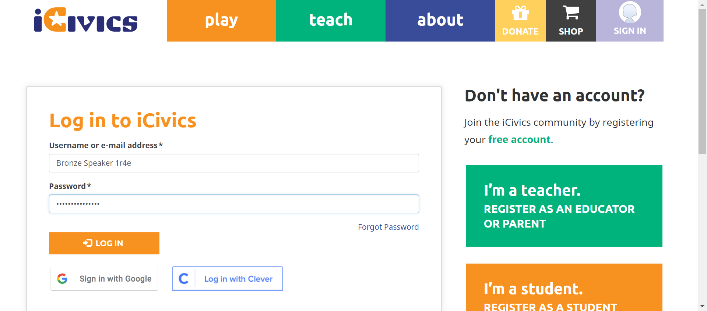 check_circle 7:50:37 PM myicivics button is clicked and submenu is display 
check_circle 7:50:37 PM myicivics submenu count is 3 
check_circle 7:50:37 PM myicivcs submenu is MY ICIVICS 
check_circle 7:50:38 PM myicivcs submenu is MY CLASSES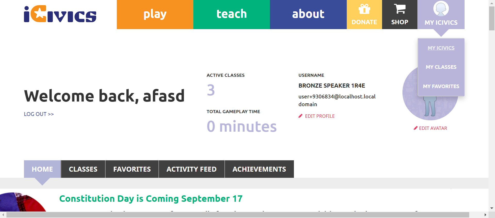 check_circle 7:50:38 PM myicivcs submenu is MY FAVORITES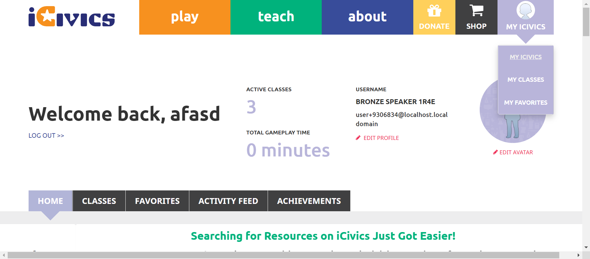 check_circle 7:51:14 PM The Element MY ICIVICS clicked 
check_circle 7:51:17 PM Selected page is underlined 
cancel 7:51:53 PM Selected page is not underlined 
-
-
HomepageHeaderplay Jun 15, 2022 07:52:52 PM failJun 15, 2022 07:52:52 PM Jun 15, 2022 07:54:43 PM 0h 1m 51s+0ms
-
C41 -If you are viewing one of the pages in the Sign In/My iCivics submenu, is that page underlined in the submenu?
Jun 15, 2022 09:19:17 PM 0h 6m 57s+589ms failStatus Timestamp Details check_circle 7:53:26 PM The Element LOG IN clicked 
check_circle 7:53:29 PM myicivics button is clicked and submenu is display 
check_circle 7:53:30 PM myicivics submenu count is 3 
check_circle 7:53:30 PM myicivcs submenu is MY ICIVICS 
check_circle 7:53:30 PM myicivcs submenu is MY CLASSES 
check_circle 7:53:30 PM myicivcs submenu is MY FAVORITES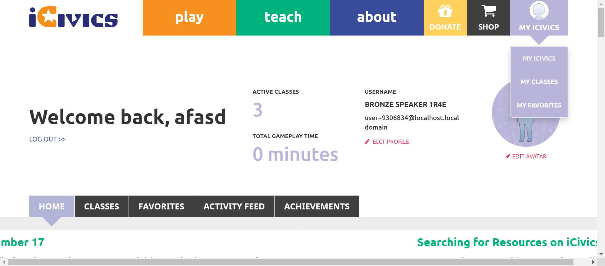 check_circle 7:54:04 PM The Element MY ICIVICS clicked 
check_circle 7:54:07 PM Selected page is underlined 
cancel 7:54:42 PM Selected page is not underlined 
check_circle 7:54:43 PM The Element MY ICIVICS clicked 
check_circle 7:54:43 PM on clicking again myicivics submenu is close 
-
-
HomepageHeaderplay Jun 15, 2022 08:00:39 PM failJun 15, 2022 08:00:39 PM Jun 15, 2022 08:03:31 PM 0h 2m 52s+0ms
-
C41 -If you are viewing one of the pages in the Sign In/My iCivics submenu, is that page underlined in the submenu?
Jun 15, 2022 09:19:17 PM 0h 6m 57s+593ms failStatus Timestamp Details check_circle 8:01:38 PM The Element LOG IN clicked check_circle 8:01:41 PM myicivics button is clicked and submenu is display 
check_circle 8:01:42 PM myicivics submenu count is 3 
check_circle 8:01:42 PM myicivcs submenu is MY ICIVICS 
check_circle 8:01:42 PM myicivcs submenu is MY CLASSES 
check_circle 8:01:42 PM myicivcs submenu is MY FAVORITES 
check_circle 8:02:19 PM The Element MY ICIVICS clicked 
check_circle 8:02:22 PM Selected page is underlined 
cancel 8:02:57 PM Selected page is not underlined 
check_circle 8:03:31 PM Selected page is underlined 
check_circle 8:03:31 PM The Element MY ICIVICS clicked 
check_circle 8:03:31 PM on clicking again myicivics submenu is close 
-
-
HomepageHeaderplay Jun 15, 2022 08:07:48 PM passJun 15, 2022 08:07:48 PM Jun 15, 2022 08:07:51 PM 0h 0m 3s+0ms
-
C41 -If you are viewing one of the pages in the Sign In/My iCivics submenu, is that page underlined in the submenu?
Jun 15, 2022 09:19:17 PM 0h 6m 57s+596ms pass
-
-
HomepageHeaderplay Jun 15, 2022 08:10:23 PM failJun 15, 2022 08:10:23 PM Jun 15, 2022 08:13:12 PM 0h 2m 49s+0ms
-
C41 -If you are viewing one of the pages in the Sign In/My iCivics submenu, is that page underlined in the submenu?
Jun 15, 2022 09:19:17 PM 0h 6m 57s+598ms failStatus Timestamp Details check_circle 8:11:24 PM myicivics button is clicked and submenu is display 
check_circle 8:12:00 PM The Element MY ICIVICS clicked 
check_circle 8:12:03 PM Selected page is underlined 
cancel 8:12:38 PM Selected page is not underlined 
check_circle 8:13:12 PM Selected page is underlined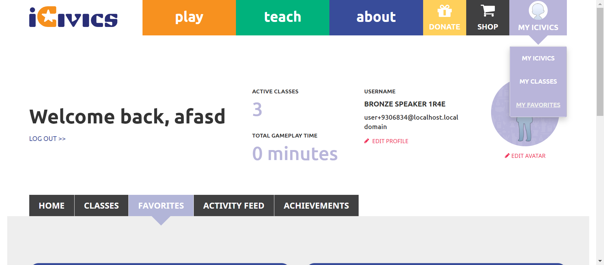 check_circle 8:13:12 PM The Element MY ICIVICS clicked 
check_circle 8:13:12 PM on clicking again myicivics submenu is close 
-
-
HomepageHeaderplay Jun 15, 2022 08:40:28 PM passJun 15, 2022 08:40:28 PM Jun 15, 2022 08:40:39 PM 0h 0m 11s+0ms
-
C41 - If you are viewing one of the pages in the Sign In/My iCivics submenu, is that page underlined in the submenu?
Jun 15, 2022 09:19:17 PM 0h 6m 57s+601ms passStatus Timestamp Details check_circle 8:40:39 PM Signinbutton is displayed 
-
-
HomepageHeaderplay Jun 15, 2022 08:43:06 PM passJun 15, 2022 08:43:06 PM Jun 15, 2022 08:43:31 PM 0h 0m 25s+0ms
-
C41 - If you are viewing one of the pages in the Sign In/My iCivics submenu, is that page underlined in the submenu?
Jun 15, 2022 09:19:17 PM 0h 6m 57s+602ms passStatus Timestamp Details check_circle 8:43:17 PM signinbutton is clicked and submenu is displayed 
check_circle 8:43:18 PM signinbutton submenu count is 3 
check_circle 8:43:18 PM signinbutton submenu is SIGN IN 
check_circle 8:43:18 PM signinbutton submenu is REGISTER AS A STUDENT 
check_circle 8:43:19 PM signinbutton submenu is REGISTER AS A TEACHER 
check_circle 8:43:27 PM The Element SIGN IN clicked check_circle 8:43:30 PM Selected page is underlined 
check_circle 8:43:30 PM signinbutton submenu is display 
check_circle 8:43:31 PM signinbutton submenu is Close on clicking again 
-
-
HomepageHeaderplay Jun 15, 2022 08:45:15 PM passJun 15, 2022 08:45:15 PM Jun 15, 2022 08:45:37 PM 0h 0m 22s+0ms
-
C41 - If you are viewing one of the pages in the Sign In/My iCivics submenu, is that page underlined in the submenu?
Jun 15, 2022 09:19:17 PM 0h 6m 57s+605ms passStatus Timestamp Details check_circle 8:45:24 PM signinbutton is clicked and submenu is displayed 
check_circle 8:45:24 PM signinbutton submenu count is 3 
check_circle 8:45:25 PM signinbutton submenu is SIGN IN 
check_circle 8:45:25 PM signinbutton submenu is REGISTER AS A STUDENT 
check_circle 8:45:26 PM signinbutton submenu is REGISTER AS A TEACHER 
check_circle 8:45:34 PM The Element SIGN IN clicked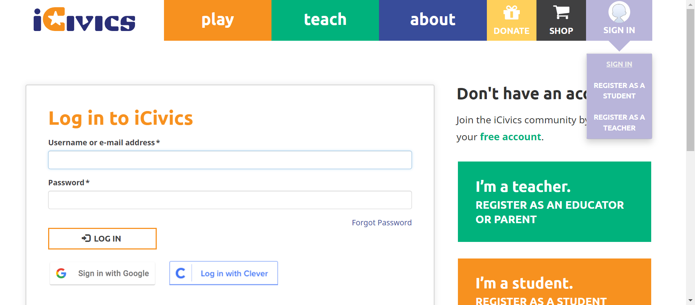 check_circle 8:45:37 PM Selected page is underlined 
check_circle 8:45:37 PM signinbutton submenu is display 
check_circle 8:45:37 PM signinbutton submenu is Close on clicking again 
-
-
HomepageHeaderplay Jun 15, 2022 08:46:31 PM passJun 15, 2022 08:46:31 PM Jun 15, 2022 08:46:54 PM 0h 0m 23s+0ms
-
C41 - If you are viewing one of the pages in the Sign In/My iCivics submenu, is that page underlined in the submenu?
Jun 15, 2022 09:19:17 PM 0h 6m 57s+608ms passStatus Timestamp Details check_circle 8:46:40 PM Signinbutton is displayed 
check_circle 8:46:50 PM The Element SIGN IN clicked check_circle 8:46:53 PM Selected page is underlined 
check_circle 8:46:53 PM signinbutton submenu is display 
check_circle 8:46:54 PM signinbutton submenu is Close on clicking again 
-
-
HomepageHeaderplay Jun 15, 2022 08:53:02 PM passJun 15, 2022 08:53:02 PM Jun 15, 2022 08:53:27 PM 0h 0m 25s+0ms
-
C41 - If you are viewing one of the pages in the Sign In/My iCivics submenu, is that page underlined in the submenu?
Jun 15, 2022 09:19:17 PM 0h 6m 57s+609ms passStatus Timestamp Details check_circle 8:53:15 PM Signinbutton is displayed 
check_circle 8:53:23 PM The Element SIGN IN clicked check_circle 8:53:26 PM Selected page is underlined 
check_circle 8:53:27 PM The Element SIGN IN clicked 
check_circle 8:53:27 PM on clicking again signin submenu is close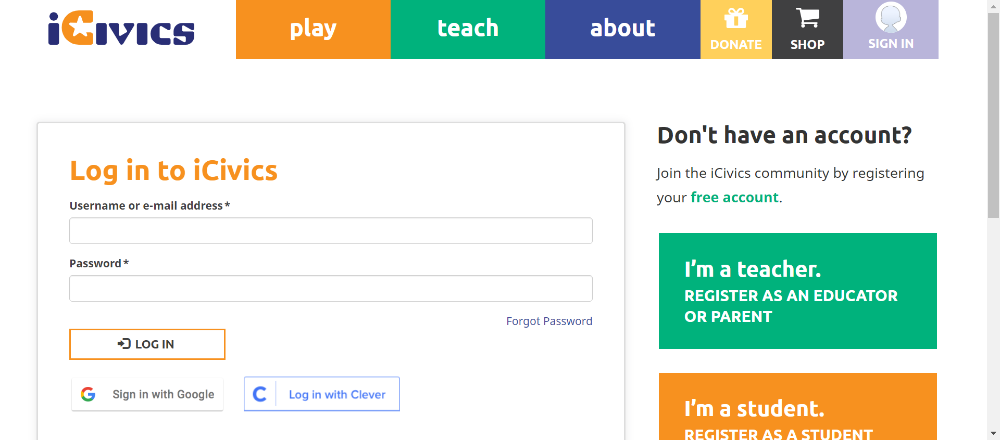
-
-
HomepageHeaderplay Jun 15, 2022 08:56:25 PM passJun 15, 2022 08:56:25 PM Jun 15, 2022 08:56:47 PM 0h 0m 22s+0ms
-
C41 - If you are viewing one of the pages in the Sign In/My iCivics submenu, is that page underlined in the submenu?
Jun 15, 2022 09:19:17 PM 0h 6m 57s+611ms passStatus Timestamp Details check_circle 8:56:34 PM Signinbutton is displayed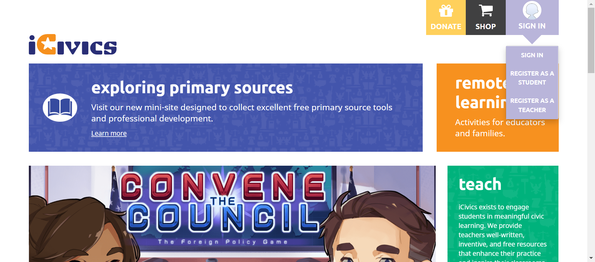 check_circle 8:56:44 PM The Element SIGN IN clicked check_circle 8:56:47 PM Selected page is underlined 
check_circle 8:56:47 PM on clicking again signin submenu is close 
-
-
HomepageHeaderplay Jun 15, 2022 09:02:38 PM passJun 15, 2022 09:02:38 PM Jun 15, 2022 09:02:58 PM 0h 0m 20s+0ms
-
C41 - If you are viewing one of the pages in the Sign In/My iCivics submenu, is that page underlined in the submenu?
Jun 15, 2022 09:19:17 PM 0h 6m 57s+613ms passStatus Timestamp Details check_circle 9:02:47 PM Signinbutton is displayed 
check_circle 9:02:55 PM The Element SIGN IN clicked check_circle 9:02:58 PM Selected page is underlined 
check_circle 9:02:58 PM on clicking again signin submenu is close 
-
-
HomepageHeaderplay Jun 15, 2022 09:08:25 PM passJun 15, 2022 09:08:25 PM Jun 15, 2022 09:08:58 PM 0h 0m 33s+0ms
-
C41 - If you are viewing one of the pages in the Sign In/My iCivics submenu, is that page underlined in the submenu?
Jun 15, 2022 09:19:17 PM 0h 6m 57s+615ms passStatus Timestamp Details check_circle 9:08:36 PM Signinbutton is displayed check_circle 9:08:45 PM The Element SIGN IN clicked check_circle 9:08:48 PM Selected page is underlined 
check_circle 9:08:58 PM The Element SIGN IN clicked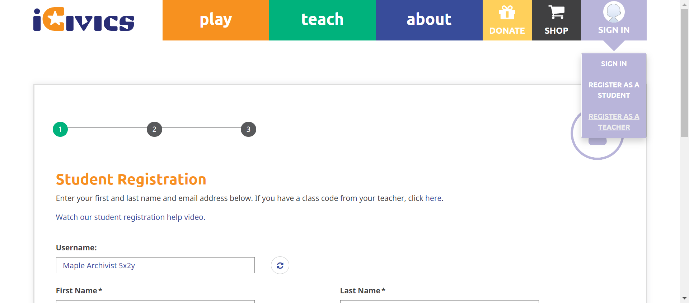
-
-
HomepageHeaderplay Jun 15, 2022 09:10:17 PM passJun 15, 2022 09:10:17 PM Jun 15, 2022 09:10:47 PM 0h 0m 30s+0ms
-
C41 - If you are viewing one of the pages in the Sign In/My iCivics submenu, is that page underlined in the submenu?
Jun 15, 2022 09:19:17 PM 0h 6m 57s+617ms passStatus Timestamp Details check_circle 9:10:27 PM Signinbutton is displayed 
check_circle 9:10:35 PM The Element SIGN IN clicked check_circle 9:10:38 PM Selected page is underlined 
check_circle 9:10:47 PM The Element SIGN IN clicked
-
-
HomepageHeaderplay Jun 15, 2022 09:12:21 PM failJun 15, 2022 09:12:21 PM Jun 15, 2022 09:12:57 PM 0h 0m 36s+0ms
-
C41 - If you are viewing one of the pages in the Sign In/My iCivics submenu, is that page underlined in the submenu?
Jun 15, 2022 09:19:17 PM 0h 6m 20s+619ms failStatus Timestamp Details check_circle 9:12:32 PM Signinbutton is displayed check_circle 9:12:40 PM The Element SIGN IN clicked check_circle 9:12:43 PM Selected page is underlined 
check_circle 9:12:53 PM The Element SIGN IN clicked cancel 9:12:57 PM Selected page is not underlined 
check_circle 9:12:57 PM on clicking again signin submenu is close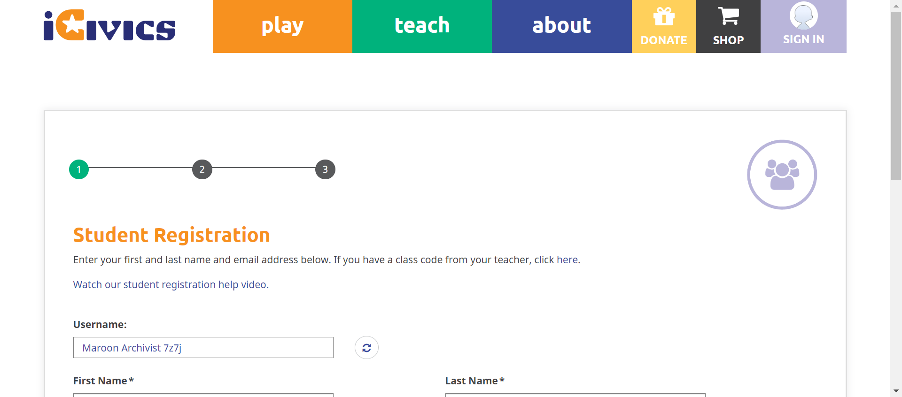
-
-
HomepageHeaderplay Jun 15, 2022 09:19:17 PM failJun 15, 2022 09:19:17 PM Jun 15, 2022 09:20:05 PM 0h 0m 47s+556ms
-
C41 - If you are viewing one of the pages in the Sign In/My iCivics submenu, is that page underlined in the submenu?
Jun 15, 2022 09:20:05 PM 0h 0m 44s+903ms failStatus Timestamp Details check_circle 9:19:28 PM Signinbutton is displayed 
check_circle 9:19:37 PM The Element SIGN IN clicked check_circle 9:19:40 PM Selected page is underlined 
check_circle 9:19:49 PM The Element SIGN IN clicked cancel 9:19:52 PM Selected page is not underlined 
check_circle 9:20:01 PM The Element SIGN IN clicked 
check_circle 9:20:05 PM Selected page is underlined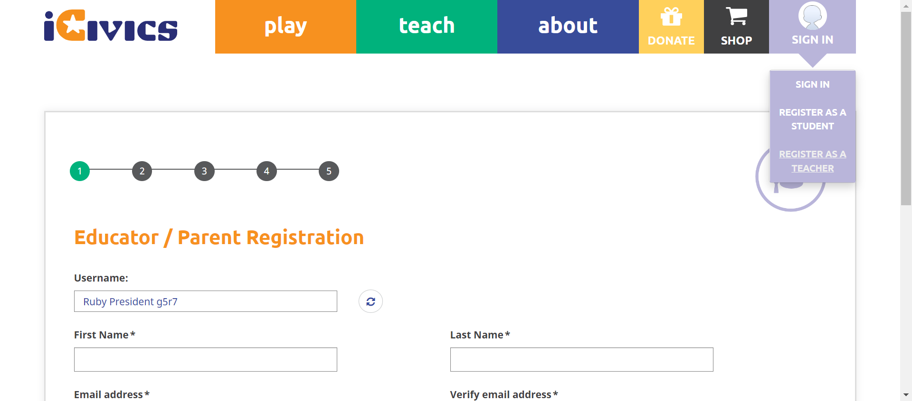 check_circle 9:20:05 PM on clicking again signin submenu is close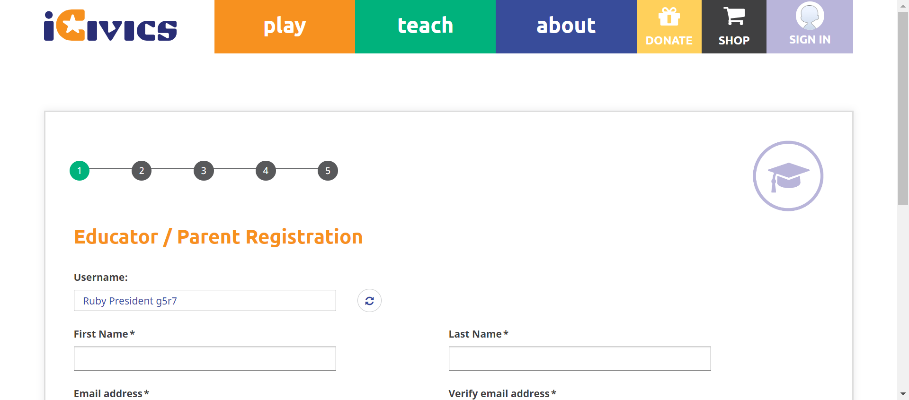
-
info_outline
check_circle
cancel
cancel
error
warning
redo
clear
Dashboard
Tests
57
Steps
274
Start
Jun 15, 2022 09:19:17 PM
End
Jun 15, 2022 09:20:05 PM
Time Taken
0h 0m 48s+683ms